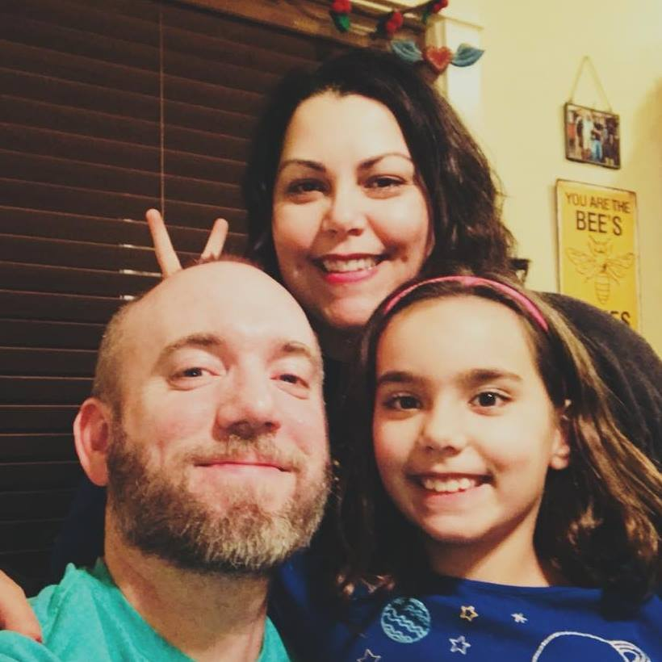

I was born and raised in Boise, Idaho. I live next door to the house where I grew up with my wonderful family Melissa, Natalie, Penny, and Charles.
In our spare time we love watching movies and playing board games. Our game collection tallies in at 125. We're also huge Potterheads. For those who haven't been sorted that means we love all things Harry Potter.
We also enjoy spending time at our cabin. It is only about a half-hour drive from Boise toward Idaho City. It's a perfect place for hiking in the summer and sledding in the winter.